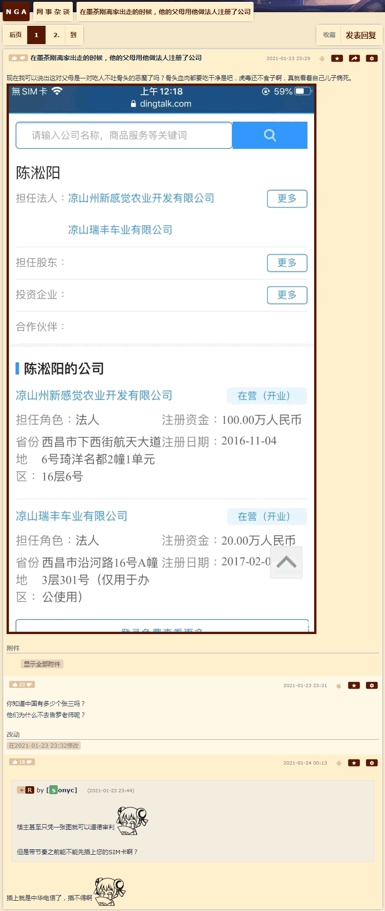
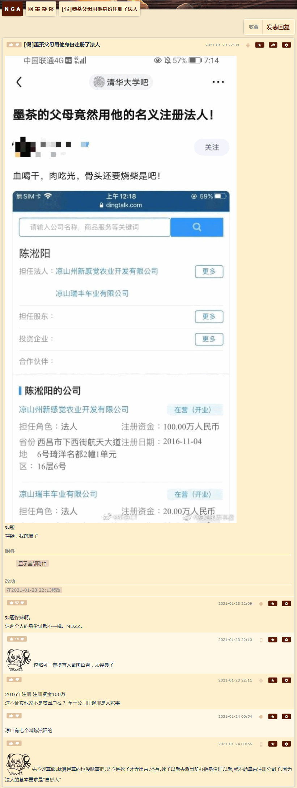
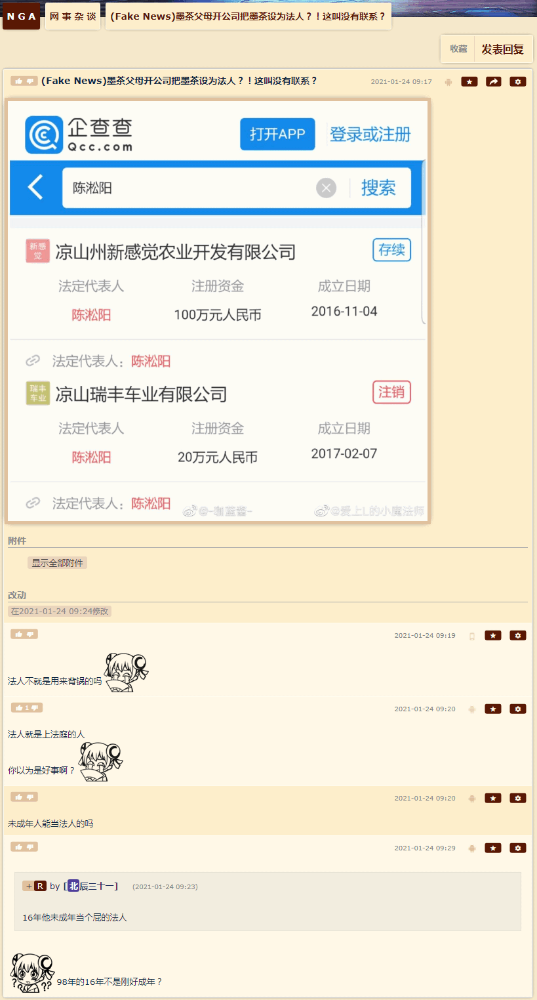
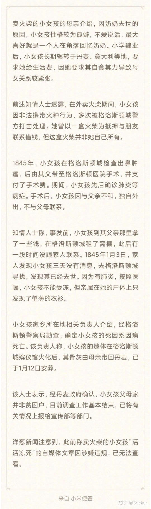

长话短说，备份屎史料：
关于罗刹乱局，可以参考多年前春夏之交的典故：党国栋梁青年才俊高学历精英先闹，逮着建制派或曰当权派狂喷，闹到波兰大选在野党大获全胜，建制派或曰当权派见势不妙就会出动历史の五对负重轮将不自量力螳臂挡车的跳梁小丑碾为齑粉，否则毒贩受到鼓舞就会冲击偏殿搬走邦昌御用计算机向境外泄漏国家机密兼宇宙奥秘了也。
参考《消息报》权威报道《法媒：美警称国会山暴徒窃取佩洛西电脑欲卖给俄军》：

早有根红苗正童年才俊辟谣，说广场不是高速公路没有限行标志，所以清洁工人没发现猫饼狗饼人饼，相关报道均来自中央情报局以君子之心度小人之腹：1969年伍德斯托克音乐会用推土机清场，几千吨垃圾当中有嗑多了药的青年与帐篷紧密团结在一起的残骸；1932年麦克阿瑟艾森豪威尔巴顿三人组驾驶压路机清场并叫嚣「有的贼配军呢，就是没有劳改犯的自知之明」并洗地「退伍老兵不会死，只会从档案上消失」或曰「你有身份证么①」。
关于「指鹿为马」，可以参考前几篇日记中《人民观察家报》文曲星炮制的「震惊重磅突发号外」流标题，这里不再重复，仅仅提醒与「大秦帝国」土崩瓦解暗示的国际一流和谐宜居之都即将到来的军事政变有关。
关于「鲁氏猹」，可以参考《囧斋范某自作用字》，虽然没造「猹」字，但是造了个「鲁 」字。并且我相信当初鲁迅手写稿寄到编辑部没事，编辑部发给印刷厂就得临时铸字了，并非自力更生艰苦奋斗自己动手丰衣足食自给自足的自然码字方式。这也是我与鲁迅的区别之一，正如之前强调鲁迅不惮以最大的恶意揣测中国人，我则不惮以最大的恶意揣测所有人那样。
其它情报还在发酵中，繁荣的简体中文互联网上活蹦乱跳的色目情报掮客正在向着所有可能的方向带节奏。比方说「墨茶」相关报道，有观点指出大手传媒机构欺负死人不会说话②，或曰有狼牙棒撑腰可以先割喉再审判，通常是灭口之后再找个替身演员在公审大会上表演痛哭流涕认罪伏法。
就事论事，假设是文曲星炮制的宣传文案，那么「墨茶」还不够惨，因为「家里不管」仅仅是零而已，还没到负数。结合自身经历可以提点改稿建议，就说亲生父母离婚后各自组建了小康家庭，还隔山差五到「墨茶」住处破门而入探头探脑，看见什么都拿走，甭管用得上用不上，「一次性纸杯子也要，卫生纸也要」（央视《大史记》），终于有一天把墨茶吃的药拿走了，买药的钱也拿走了，墨茶就是这么死的。
按照根红苗正忠君爱国的童年才俊提供的标准答案《十万个不为什么》，理由就是「不为什么，甲方建议实行余粮收集制，故意使他颠倒破费，不容他身边积攒一些」。
- ① 有关「套牌人」或曰查博导熊文豪笔下充沛的「双胞胎兄弟」包括但不限于陈石江等祠堂传奇经历所体现的幕后黑手「甲方」渗透公检法炮制「假作真时真亦假，无为有处有还无」系列重要剧本，之前谈笑风生当中解读过多次了，这里不再重复。仅仅提醒作者亲身经历过家贼拿着我的身份证干这干那都瞒着我还反问我「你有身份证么」的奇葩套路，反复强调这个细节并不是一个「祥林嫂」车轱辘话来回说，而是十四万四千张诺亚方舟船票或曰以色列护照至少对应了十四万四千个狗苟蝇营工具人「祥林嫂」，每人爆料一遍也是十四万四千遍。按照家贼套路应该是抱着脑袋往地下一蹲「读者看作者家这情况吧」然后诚恳的表示「作者老了，记性不好了，读者别跟我急」。   
- ②